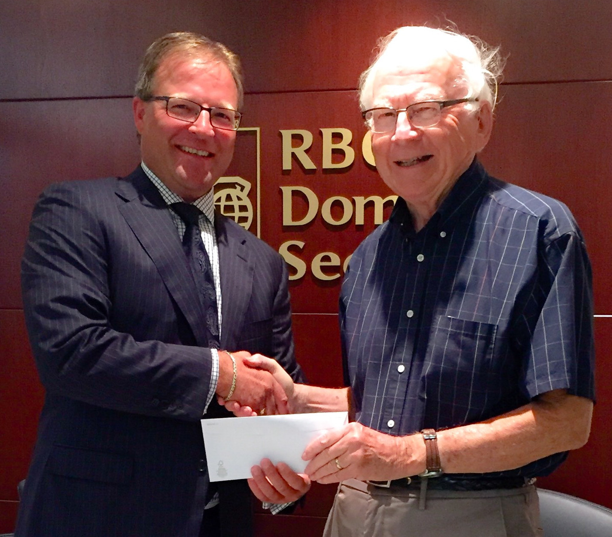

“A student’s ability to transition from secondary school to post-secondary education and the labour market is a key measure of the education system’s success for students” – CMEC, July 2016
Getting help in Souris
I was having coffee and conversation with friends at the Evergreen Restaurant in Souris recently when the following thought struck me: “Where do Souris residents obtain the information they need for making decisions on matters of education?” We could ask the same question in any community.
Students can talk with teachers and counsellors but what about the people who are not in school? People may be thinking about education for many reasons: personal interest, self-development, shift jobs or occupations, to get help for children or grandchildren, to improve job performance, to improve quality of life in the community, and to help attract and retain businesses. Whatever the reason, where does a person or organization turn for information and advice?
On returning home, I Googled “Souris development, Souris business development and Souris education” to see what I could find. I used “development” as a keyword because educating is a developmental process; I found schools, business development offices, career services and a few other things, but none struck me as being sufficiently comprehensive.
Given the complexity of education decision making, and the lack of space in this column, I’ll limit myself to a few options:
A brochure describing available services
A toll-free number
A Web page or links to webpages
An education navigator
An education office
A family education advisor to provide information, counselling and assessment services, as required.
Thanks

David Smith, Portfolio Manager, RBC Wealth Management presents a cheque to Don Glendenning, President, Education 20/20 Inc.
Watch for:
A film
Beyond Measure
City Cinema
Charlottetown, PEI
Sunday, October 16, 2016
2:00 p.m.
A film based on a book of the same name by Margaret Heffernan; the film addresses the issue of an “overscheduled, over tested and underestimated generation.
A presentation in October on the importance of social & emotional learning, and its links to individual and community well-being.
Don Glendenning, Editor
Education 20/20 Inc.
101 Kent St., PO Box 624 / 101, rue Kent, B.P. 624
Charlottetown, PEI / Charlottetown (Î.-P.-É.) C1A 1M0
Tel./Tél. : 902-892-2060
Email/Courriel : pei@education2020.ca